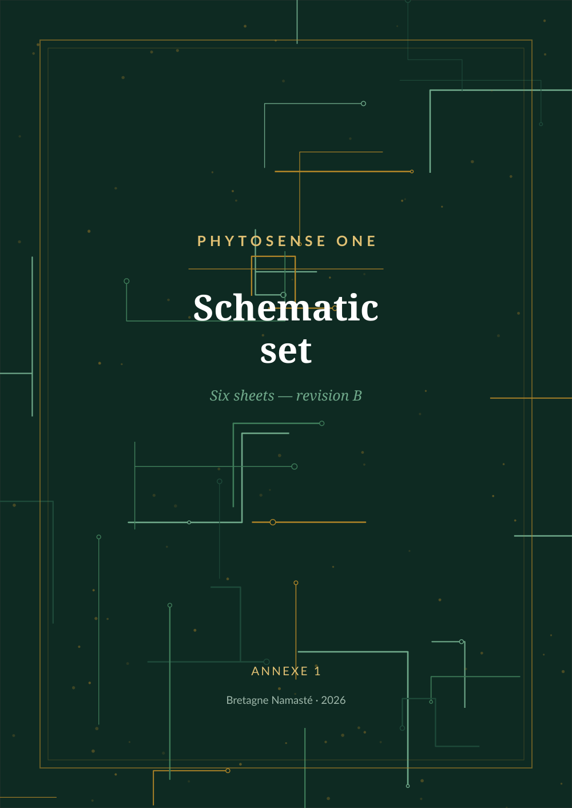

Ce fascicule rassemble les huit feuilles de schéma de la carte PhytoSense One, au format paysage, pour être imprimé et emporté à l'établi. Il ne contient aucune explication : celles-ci figurent dans l'ouvrage La Carte PhytoSense, dont les renvois sont indiqués sur chaque feuille.
| Feuille | Bloc | Contenu | Commentaire dans l'ouvrage |
|---|---|---|---|
| 1 | Carte fille FE-Z | Entrée électrométrique, tampon de garde, contre-réaction de mode commun | chapitre 3 |
| 2 | Carte fille FE-B | Pont excité en alternatif, amplificateur d'instrumentation, démodulation synchrone | chapitre 4 |
| 3 | Carte mère | Gain programmable, filtre de Bessel, attaque différentielle, convertisseur | chapitre 5 |
| 4 | Carte mère | Alimentations isolées, régulateurs à faible bruit, isolateurs numériques | chapitre 5 |
| 5 | Carte mère | Microcontrôleur, USB-C, MIDI, interface homme-machine | chapitre 7 |
| 6 | Interconnexion | Brochage du connecteur mezzanine | chapitre 2 |
Symboles selon la norme CEI 60617. Masse analogique en triangle plein, masse numérique en peigne. Les étiquettes pentagonales désignent les signaux inter-feuilles. Le trait mixte cuivre matérialise la barrière d'isolement galvanique : aucun conducteur ne la franchit.
La carte fonctionne sur le 5 V de l'USB, sur une batterie, ou sur un bloc d'alimentation externe de 7 à 24 V à très basse tension de sécurité. Elle ne comporte aucune partie raccordée directement au secteur, et ne doit jamais en comporter : l'isolement du réseau est le travail du bloc externe, qui doit porter le marquage CE et la double isolation. Ne jamais relier un oscilloscope relié à la terre sur un montage connecté à un être vivant. La résistance de 22 kΩ en série avec l'électrode de référence est une limitation de sécurité : elle ne se substitue pas.
Schémas publiés sous licence CERN-OHL-P v2. Révision B, septembre 2026. Bretagne Namasté — bretagne-namaste.com — contact@bretagne-namaste.com